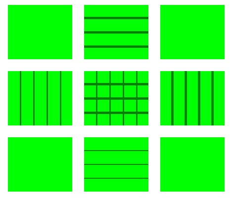
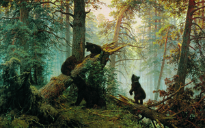

Should be 3 different startrek icons. Should be 3 different startrek icons. Scale 0.9 Should be 3 different startrek icons. Scale 1.1
Should be 5 circles of different color.
Background-repeat
The above images should look exactly like the image below.

Progressive images
Progressive jpg
CMYK color profile

Canvas
The above images should be the second image below on top of the first image below, shifted to the right.